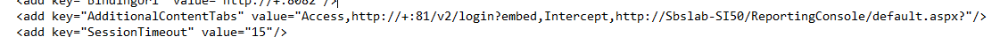

Summary: This guide will explain how to add additional report indexes to the STEALTHbits published report portal. This will work for StealthINTERCEPT, StealthRECOVER, and StealthDEFEND.
Issue: When customers own multiple STEALTHbits products, it becomes a hassle to remember the address to each individual report index. Sometimes they just want one unified area to access all report indexes.
Instructions:
- Navigate to the WebServer.exe.config file in the StealthAUDIT installation directory in the "web" folder (%sainstalldir%web)
- Look for the (If AIC is already installed you should see
- Add values in the following format
Example if AIC is already installed
 - After saving the file, restart the "StealthAUDIT Web Server" service
- Log in to the STEALTHbits Report Index. You should now see an additional tab for the report index that was added